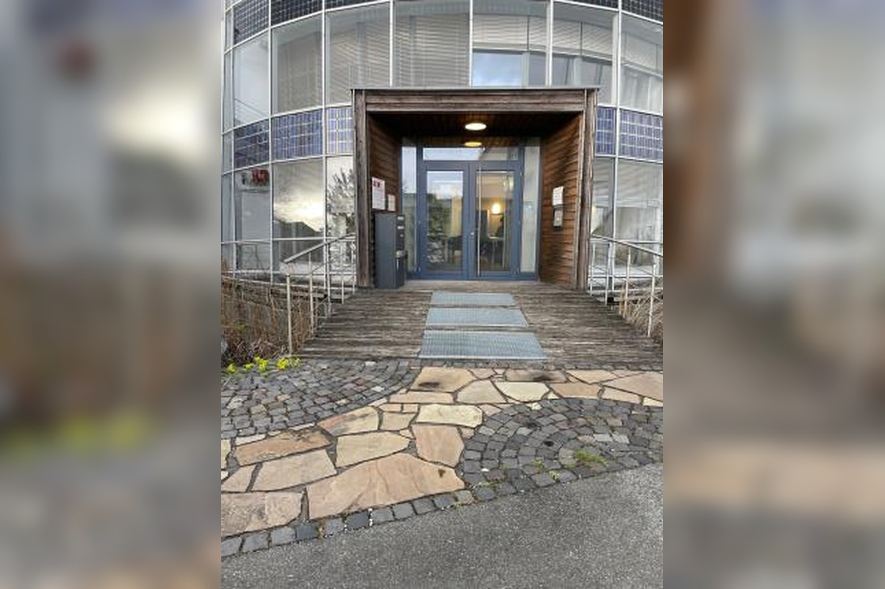
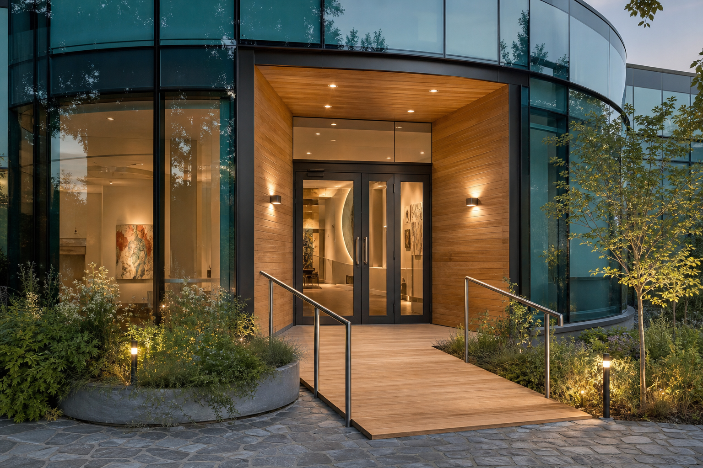
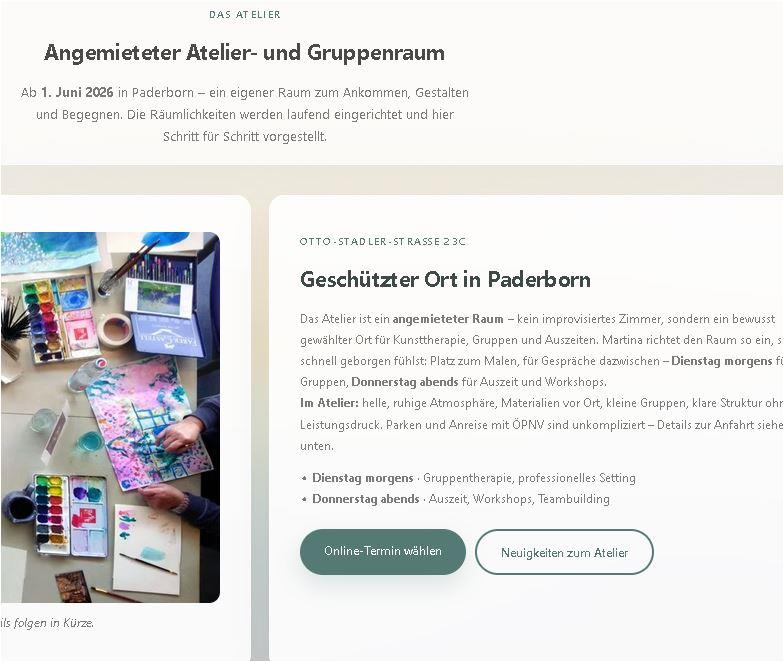

Kunst, die trägt – nicht nur schmückt
Dienstag 11:00–12:30 Uhr und Donnerstag 18:00–19:30 Uhr – feste Atelierzeiten. Die Gruppenzeiten rotieren: im Wechsel auch donnerstags abends.
Für Unternehmen · für Kliniken & Einrichtungen
- Di Dienstag morgens · Gruppen & Therapie
- Do Donnerstag abends · Auszeit & Workshops
- 90 Min · 4–12 Personen · ab 55 €
Welches Angebot passt?
Fünf Angebote – Karte antippen für die ausführliche Beschreibung.
Gruppentherapie
Details anzeigen
Gruppentherapie
Details anzeigenPrimär dienstags 11:00–12:30 Uhr – die Gruppenzeiten rotieren und werden im Wechsel auch donnerstags abends angeboten. Viele Menschen kennen bereits kunsttherapeutisches Gestalten in Gruppen, haben die Kunsttherapie schätzen gelernt, Wissen um die Wirksamkeit – und suchen einen freien Platz. Selbstverständlich auch für alle, die durch ressourcenorientierte, visuelle Methoden ganz individuelle Themen gestalten möchten – mit professioneller Begleitung.
Gruppentherapie, freies und thematisches Gestalten: Kunst als Weg zurück zu deinem Inneren – um Gesundheit zu erhalten und zu fördern, im Sinne unserer Resilienz und psychischen Widerstandsfähigkeit.
„Bilder sagen mehr als tausend Worte“, sowie „die Heilkraft der Farben“ sind Erfahrungswerte in der Kunsttherapie.
4–12 Personen · 90 Minuten · im Wechsel auch donnerstags abends
Auszeit: Kreativabende für Freunde & Familien
Details anzeigen
Auszeit: Kreativabende für Freunde & Familien
Details anzeigenDonnerstag 18:00–19:30 Uhr. Viele sagen danach: „Hätte nicht gedacht, dass mir ein Bild so gut gelingt.“
Buchbar für Familie und Freunde – nicht einzeln buchbar. Es geht um Freude durch neue Erfahrungen und eine gute kreative gemeinsame Auszeit.
Termine auf Anfrage
Einzelsitzungen
Details anzeigen
Einzelsitzungen
Details anzeigenIntensiv und persönlich: psychosoziale und klinische Kunsttherapie in Krisen, bei Trauer oder in der Krankheitsverarbeitung – individuell auf die jeweilige Situation abgestimmt.
Im geschützten Rahmen des Ateliers oder nach Vereinbarung. Termine flexibel außerhalb der Gruppenzeiten – Preis auf Anfrage.
Teambuilding & Institutionen
Details anzeigen
Teambuilding & Institutionen
Details anzeigenRaus aus dem Büro, rein ins FarbenReich – erleben Sie sich und Ihre Kolleginnen und Kollegen MALend ganz neu. Sie gestalten ein Werk mit Überraschungseffekt, mit spielerischen Regeln und echter Verbindung, das wertschätzend einen exponierten Platz in der Firma bekommen darf.
Mindestens 12, maximal 18 Teilnehmer. Bei mehr als 18 Teilnehmern bitte Kontakt aufnehmen. Termine nach Absprache.
Vorträge & Impulse
Details anzeigen
Vorträge & Impulse
Details anzeigenRegelmäßige Vorträge und Impulse aus der Kunsttherapie.
Warum Kunst statt nur Gespräch? Ein Einblick in Wirkung, Methoden und Erfahrungen aus über 16 Jahren klinischer Arbeit – für Einrichtungen, Fachpublikum und Interessierte. Auch Gruppen (z. B. Senioren) und palliative Begleitung aus langjähriger Praxis.
Dauer, Ort und Honorar nach Absprache – Konzept und Material inklusive.
„Ohne die Freiheit des Geistes ist die Kunst weder machbar, denkbar, noch erfahrbar.“
„Kunst, Kultur, Natur und alles, was sich nicht rechnet, bereichern das Leben, lassen ahnen, wie heil sein ist.“
Wie Kunsttherapie wirkt
In wenigen Sätzen – vertiefend per Klick.
Warum Kunst statt nur Gespräch?
Nur Gespräch: Gedanken und Gefühle in Worte fassen – manchmal stößt man an Grenzen.
Mit Gestalten: „Ich könnte es malen, nicht in Worte ausdrücken.“ Der Prozess ist ein wesentlicher Teil der Kunsttherapie, wie auch das Werk, das entsteht – als Projektionsfläche, als Spiegel: Distanz und Nähe zugleich.
Brauche ich Vorkenntnisse?
Nein – Vorkenntnisse sind nicht nötig. Entscheidend ist, dass sich das Gestalten stimmig anfühlt. Ausprobieren lohnt sich – der Überraschungseffekt gehört dazu.
Welche Materialien und Methoden gibt es?
Die Materialien sind sehr facettenreich: Pastellkreide, Collagen, Malen mit flüssigen Farben wie Gouache, Aquarell und Acryl, Zeichnen und Plastizieren in Ton. Regelmäßige Gruppen Dienstag 11:00–12:30, Auszeit und Workshops Donnerstag 18:00–19:30. Die Gruppenzeiten rotieren: im Wechsel auch donnerstags abends.
Mit welchen Themen kann ich kommen?
- Raum für Trauer, die noch keinen Ausdruck gefunden hat
- Hilfe bei chronischen Schmerzen
- Vision Board: Vorstellungskraft, Klarheit und Struktur finden
- Achtsamkeit malend – die Umwelt bewusst wahrnehmen; Meditationstechniken für innere Ruhe
- Positiver Flow und Techniken erleben
Muss ich malen können?
Nicht entscheidend: ein schönes Ergebnis oder „können“.
Im Mittelpunkt: der Prozess. Jede Spur, jede Farbe ist richtig – Vorerfahrung ist nicht nötig.
Ist Kunsttherapie das Richtige für mich?
Kunsttherapie kann begleiten bei Belastung, Trauer, chronischen Schmerzen oder einfach dem Wunsch nach einer kreativen Auszeit. In einem unverbindlichen Kennenlernen klären wir gemeinsam, ob es passt.
Übernimmt die Krankenkasse die Kosten?
Die Angebote sind in der Regel Selbstzahler-Leistungen. Bei Fragen zu Kostenübernahme, Firmen- oder Einrichtungs-Abrechnung sprich mich gern direkt an.
Wie läuft eine Sitzung ab?
Eine Sitzung dauert 90 Minuten. Nach einem kurzen Ankommen gibt es einen Impuls oder ein Thema – oder du gestaltest frei. Das Gestalten steht im Mittelpunkt, am Ende ist Raum für ein Gespräch über das, was entstanden ist. Es gibt kein Richtig oder Falsch und kein Tempo, das du halten musst.
Was muss ich mitbringen?
Nur dich selbst. Die gängigen Materialien – Farben, Kreiden, Papier, Collage-Material und mehr – sind je nach Absprache vor Ort und im Preis enthalten. Kleidung, die auch mal Farbe abbekommen darf, ist sinnvoll. Wird im Einzelfall mehr benötigt, kann es zu Zusatzkosten kommen; diese klären wir vorab gemeinsam im Vorgespräch.
Ist Kunsttherapie vertraulich?
Ja. Alles, was in den Sitzungen besprochen und gestaltet wird, bleibt vertraulich. Deine Werke gehören dir – sie werden nur mit deiner ausdrücklichen Einwilligung gezeigt oder verwendet.
Einzeln oder lieber in der Gruppe?
Gruppe (4–12 Personen): gemeinsames Erleben, gegenseitige Inspiration, geschützter Rahmen.
Einzel: intensiver und ganz auf dein Thema abgestimmt.
Im Kennenlernen finden wir heraus, was zu dir passt.
Ersetzt Kunsttherapie eine Psychotherapie?
Psychotherapie ist medizinische Behandlung bei entsprechenden Indikationen.
Kunsttherapie ist eigenständige, ressourcenorientierte Begleitung und kann sehr entlastend wirken – ersetzt jedoch keine ärztliche oder psychotherapeutische Behandlung.
Bei akuten oder schweren Beschwerden bitte zusätzlich eine Ärztin oder einen Arzt aufsuchen; gern bespreche ich mit dir, wie sich beides ergänzen kann.
Atelier- und Gruppenraum
Ab 1. Juli 2026 in Paderborn – eine schöne Atmosphäre, etwas im Grünen mit Terrasse. Alles bereit, um sich schnell geborgen und wohl zu fühlen. Platz zum Malen und Gestalten.


Regler ziehen: links Aktuelles Foto, rechts Stimmungsvision · Punkte antippen für Details · Zum Vergrößern doppelt antippen

Klick auf die Punkte für mehr · Bild antippen zum Vergrößern

Kreativität ohne Leistungsdruck – ein Blick auf das, was im Atelier entsteht.
Ankommen und gestalten in Paderborn
Im Atelier: helle, ruhige Atmosphäre, Materialien vor Ort, kleine Gruppen, klare Struktur ohne Leistungsdruck. Parken und Anreise mit ÖPNV sind unkompliziert – Details zur Anfahrt siehe unten.
- Dienstag 11:00–12:30 · Gruppentherapie, professionelles Setting
- Donnerstag 18:00–19:30 · Auszeit, Workshops, Teambuilding
Atelierfläche
Gemeinsames Gestalten mit Acryl, Gouache, Kreide, Collage – Materialien werden gestellt.
Gruppenraum
4–12 Personen, geschützter Rahmen, auch für Seniorengruppen und Einrichtungen.
Terrasse & Grün
Kleiner Außenbereich direkt am Atelier – ruhige Lage, etwas im Grünen.
Ab Juli 2026
Regelmäßig Dienstag 11:00–12:30 und Donnerstag 18:00–19:30 – Termine online oder per Anfrage.
Anfahrt & Kontakt vor Ort
Otto-Stadler-Straße 23c
33102 Paderborn
Tel. 05251-690111 · Mobil 0170-4790790
Bereit für den ersten Schritt?
Termin online buchen oder kurz anfragen – ich melde mich zeitnah.
Mehr Einblicke: Aktuelles & Neuigkeiten